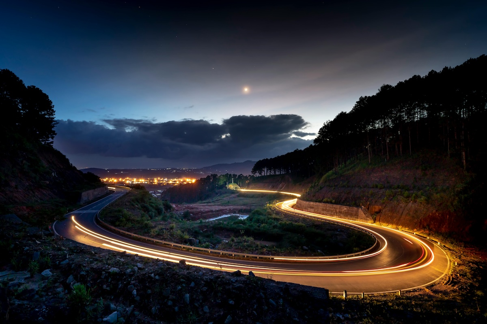

iPhone ile Işığı Yakalamak: Uzun Pozlama Fotoğrafçılığının Tüm İncelikleri

Mobil fotoğrafçılık son yıllarda ciddi bir dönüşüm geçirdi ve artık profesyonel görünümlü kareler çekmek için pahalı ekipmanlara ihtiyaç yok. Özellikle iPhone kullanıcıları için uzun pozlama (long exposure), doğru tekniklerle kullanıldığında oldukça etkileyici sonuçlar ortaya çıkarabilir. Bu yazıda iPhone ile uzun pozlama fotoğrafçılığını tüm detaylarıyla ele alacağız.
Uzun Pozlama Nedir?
Uzun pozlama, fotoğraf makinesinin sensörünün ışığa daha uzun süre maruz bırakılmasıdır. Bu sayede hareket eden nesneler bulanıklaşırken sabit nesneler net kalır. Sonuç olarak:
- Akan su ipeksi bir görünüme kavuşur
- Araç farları ışık çizgilerine dönüşür
- Kalabalıklar “hayalet” etkisi yaratır
- Gece çekimlerinde daha fazla detay yakalanır
iPhone’da Uzun Pozlama Nasıl Yapılır?
iPhone’larda klasik DSLR makinelerdeki gibi manuel enstantane kontrolü sınırlıdır. Ancak Apple, bu açığı yazılımsal çözümlerle kapatır.
1. Live Photo Kullanarak Uzun Pozlama
iPhone’un en pratik yöntemi Live Photo özelliğidir.
Adımlar:
- Kamera uygulamasını açın
- Live Photo özelliğini aktif edin
- Sabit bir şekilde fotoğraf çekin
- Fotoğraflar uygulamasına girin
- Çektiğiniz fotoğrafı açın
- Yukarı kaydırın ve “Uzun Pozlama” efektini seçin

Bu yöntem, özellikle:
- Akan su
- Trafik ışıkları
- Hareketli kalabalıklar
gibi sahnelerde oldukça başarılı sonuç verir.
2. Üçüncü Parti Uygulamalar ile Profesyonel Kontrol
Daha fazla kontrol isteyenler için App Store’da güçlü alternatifler bulunur:
- Slow Shutter Cam
- Spectre Camera
- ProCam
- Halide
Bu uygulamalar sayesinde:
- Enstantane süresi manuel ayarlanabilir
- ISO kontrol edilebilir
- Tripod ile profesyonel çekimler yapılabilir
Uzun Pozlama İçin En İyi Çekim Senaryoları
1. Akan Su (Şelale, Deniz, Dere)
Su yüzeyini yumuşatmak uzun pozlamanın en popüler kullanım alanıdır.
İpucu: Gün batımı saatleri en iyi sonuçları verir.
2. Trafik Işıkları
Gece şehir çekimlerinde araç farları ışık yollarına dönüşür.
İpucu: Yüksek bir noktadan çekim yaparsanız daha dramatik kareler elde edersiniz.
3. Gökyüzü ve Bulutlar
Hareket eden bulutlar kadraja dinamik bir etki katar.
4. Kalabalık Alanlar
Uzun pozlama ile kalabalıkları silikleştirip mimariyi ön plana çıkarabilirsiniz.
iPhone ile Uzun Pozlama Çekerken Dikkat Edilmesi Gerekenler
Tripod Kullanın
Uzun pozlamada en önemli konu stabilitedir. En ufak titreşim fotoğrafı bozabilir.
ISO Değerini Düşük Tutun
Düşük ISO daha temiz ve az grenli görüntü sağlar.
Işık Kontrolü Yapın
Çok fazla ışık varsa:
- ND filtre kullanabilirsiniz
- Ya da gün batımı / gece saatlerini tercih edebilirsiniz
Otomatik Odak Kilidi (AE/AF Lock)
Kadrajı sabitledikten sonra ekrana basılı tutarak odak ve pozlamayı kilitleyin.
iPhone’da ND Filtre Kullanımı
ND (Neutral Density) filtreler, sensöre giren ışığı azaltır. Bu sayede gündüz bile uzun pozlama yapabilirsiniz.
Ne zaman gerekli?
- Güneşli havada şelale çekimi
- Deniz ve dalga efektleri
- Açık havada trafik çekimleri
Profesyonel Görünümlü Sonuçlar İçin İpuçları
- Altın saatlerde (gün doğumu/gün batımı) çekim yapın
- Kompozisyona dikkat edin (ön plan + arka plan dengesi)
- Minimal sahneler seçin
- Fazla hareketli kadrajlardan kaçının
Sık Yapılan Hatalar
- Tripodsuz çekim yapmak
- Aşırı parlak sahnelerde uzun pozlama denemek
- Kadrajı karmaşık tutmak
- Otomatik ayarlara tamamen güvenmek
Sonuç
iPhone ile uzun pozlama fotoğrafçılığı, doğru teknikler uygulandığında oldukça etkileyici sonuçlar sunar. Live Photo gibi basit araçlardan profesyonel uygulamalara kadar geniş bir seçenek yelpazesi bulunur. Önemli olan, ışığı doğru okumak ve sabırlı bir şekilde denemeler yapmaktır.
Eğer mobil fotoğrafçılığa farklı bir boyut kazandırmak istiyorsanız, uzun pozlama tekniklerini mutlaka denemelisiniz. Bu teknik, sıradan bir kareyi bile sanat eserine dönüştürebilir.